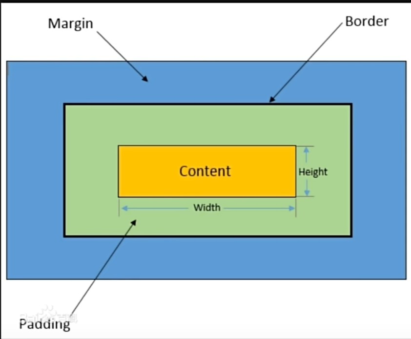

CSS课程学习
CSS内部选择器渲染
css教程链接
这是一个元素选择器的渲染样式
这是一个class选择器的样例
这是一个id选择器的样例
这是一个兄弟选择器的样例
这是一个兄弟选择器的样例
这是一个兄弟选择器的样例
这是一个伪元素选择器的样例——鼠标悬停效果
CSS属性讲解
color: 颜色
line-height行高
background-color: 背景颜色
font-weight: 字体粗细
font-famliy: 字体
font-size: 字体大小
font组合属性,可以写成font:15px "kaiTi"
- 块元素block——从新一行开始;占整行空间;可以包含其他块 行内元素
- 例:div
- 行内块元素inline-block——水平排列,不单独占一行;可以包含块 行内元素
- 例:div
- 行内元素inline——不独占一行,无法添加高度和宽度;可以包含其他行内元素
- 例:span
转换块元素 行内元素 行内块元素display
这是一个行内块元素
CSS盒模型

这是一个border基础属性的说明
- border-style: 实线、虚线、点线、双线
- border-width: 边框宽度
- border-color: 边框颜色
- border-radius: 边框圆角
CSS浮动
常见的网页布局方式
- 标准流——普通文档书写方式
- 浮动float
- 定位position
- 自适应布局——flexbox和grid布局
- felx浮动元素和行内块的区别是 浮动元素是贴在一起的 不会有缝隙
- float属性有三个值 左浮 右浮 不浮动
- 浮动有三个特性 脱离标准流 一行显示 顶部对齐 具备行内块元素特性
不浮动
CSS定位
- 相对定位——在文档流中的顺序位置
- 绝对定位——相对于某元素的位置
- 固定定位——相对于浏览器窗口的位置
相对位置——定位在大模块的相对位置
绝对位置——定位在整个网页的位置
固定位置——相对于浏览器敞口定位